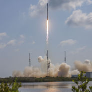
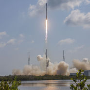
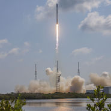
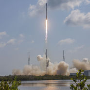

THE WORLD'S
MOST POWERFUL
ROCKET
FALCON HEAVY
- - - - - - - - - - - - - - - - - - - - - - - - - - - - - - - - - - - - - - - - - - - - - - - - - - - - - - - - - - - - - - - - - - - - - - - - - - - - - - - - - - - - - - - - - - - - - - - - - - - - - - - - - - - - - - - - - - - - - - - - -
When Falcon Heavy lifts off in 2017, it will be the
most powerful operational rocket in the world by
a factor of two. With the ability to lift into orbit
over 54 metric tons (119,000 lb)--a mass
equivalent to a 737 jetliner loaded with
passengers, crew, luggage and fuel--Falcon
Heavy can lift more than twice the payload of the
next closest operational vehicle, the Delta IV
Heavy, at one-third the cost. Falcon Heavy
draws upon the proven heritage and
reliability of Falcon 9. Its first stage is composed
of three Falcon 9 nine-engine cores whose 27
Merlin engines together generate more than 5
million pounds of thrust at liftoff, equal to
approximately eighteen 747 aircraft. Only the
Saturn V moon rocket, last flown in 1973,
delivered more payload to orbit. Falcon Heavy
was designed from the outset to carry humans
into space and restores the possibility of flying
ù
missions with crew to the Moon or Mars.